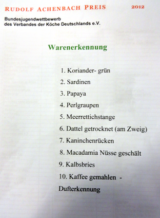

Gekocht wurde zum Finale in den besonders für Wettbewerbe ausgestatteten Küchen des Best Western Premier IB-Hotels Friedberger Warte in Frankfurt, wo die neun Finalisten ideale Arbeitsbedingungen vorfanden.
Der Hausherr Michael Nehrdich und Andreas Cieslak
Der bundesweite Nachwuchswettbewerb wurde in diesem Jahr zum 38. Mal ausgetragen.
Zum Finale qualifizierten sich drei weibliche und sechs männliche Köchinnen und Köche. 
Felix Weber (Mitte), Brenners Parkhotel in Baden-Baden-Gewinner des Achenbach Preis 2012.
Den zweiten Platz besetzte Annerose Lillge, Gastronomie Pütter, Hamburg.
Rang drei belegte Stefan Heidicke, Hilton-Hotel-Berlin.
Das Hotel am Landtagsplatz, Hössringen
Verein der Köche Rotenburg/Wümme e.V.
Niedersachsen
_ Verein der Köche Marburg
Hessen
_Köcheverein "Bavaria"München e.V.


1.) Martin Wolf, Fachlehrer Berufschule Frankfurt, Leiter der Jury
2.) Hausherr Michael Nehrdich
3.) Andreas Haak, Küchenleiter Festspielhaus Baden-Baden
4.) Andreas Cieslak,
Leiter Produktentwicklung Achenbach-Delikatessen-Manufaktur,Sulzbach /Ts.
v.l.n.r.
Oliver Steffensky,
Küchenchef Hotel Bareiss, Baiersbronn, Ausbilder das Jahres 2012
Barbara Röder
Küchenmeisterin bei Nestlè Professional, Frankfurt
StellvertretendeVorsitzende Landesverband Hessen
Holger Mootz
Restaurant Holgers in Göhren, Insel Rügen
Jugendwart des Landesverbandes Nord
Die Theoretischen Aufgaben bestehend aus:
9 Fachfragen, 1 Rechenaufgabe (10), Erkennung von 10 Rohprodukten (5)
Maximal: 15 Punkte
EDV Gesamtauswertung:
Hans-Joachim Mackes, Stuttgart
Herr Cislack und Herr Labs
Die beiden Organisatoren für den Wettbewerb
Thea Notnagel mit Stefan Heidicke
Herr Labs und Herr Wolf
Sheraton Zwischengang
Hauptgang
Ein glücklicher Chef Rudolf Pellkofer und Frau mit seinem
Auszubildenden Felix Weber
Wir sind ein Team
Rede des VKD-Präsidenten Robert Oppeneder zu Preisverleihung des
Rudolf Achenbach Preises 2012 im Sheraton Frankfurt
Sehr geehrte Familie Moos-Achenbach, sehr verehrter Ehrengäste
sehr geehrte Kolleginnen und Kollegen, liebe Wettbewerbsteilnehmer,
zwei spannende, aufregende und auch anstrengende
Wettkampftage liegen jetzt, in diesem Moment hinter den 9 besten
Nachwuchsköchen Deutschlands –
den 9 Finalisten des Rudolf Achenbach Preises 2012.
Nun fiebern wir dem Höhepunkt, der Siegerehrung entgegen.
Ich sehe die angespannten Gesichter unserer jungen Kolleginnen und Kollegen,
kann ihre Nervosität gut verstehen. Denn jeder von ihnen hat heute sein
Bestes gegeben – und jeder will den Preis gewinnen!!!
Aber glauben Sie mir, Sie sind schon jetzt alle Gewinner!
Liebe Wettbewerbs-Teilnehmer,
Ihr habt für den Rudolf Achenbach Preis nicht nur gekocht: - ein Menü erdacht,
zubereitet und angerichtet!
NEIN!
Ihr habt sehr vielfältig und facettenreich gearbeitet, man kann da schon sagen:
Ihr habt gezaubert! Jeder, der euch bei der Arbeit beobachtet,
ist überrascht darüber, welche Talente in euch stecken.
Ich habe daher einige Berufsvergleiche zum Kochberuf –
vor einiger Zeit schon einmal erwähnt. Ich wiederhole sie
hier gern, denn ich finde: diese Vergleiche beschreiben sehr
treffend unseren Beruf und ganz speziell eure Leistung!
Daher bin ich der Meinung Ein Koch / eine Köchin schlüpft in viele Rollen
und ist dabei in vielen anderen Berufen zuhause: daher meine ich:
wir hegen und pflegen unsere Kräuter und Gemüse –
wie ein Gärtner
wir kennen uns aus mit Fisch und Fleisch und Federvieh –
wie ein Bauer
und zerlegen es
wie ein Metzger
wir entscheiden uns für Gar- und Zubereitungsmethoden
oder auch für Molekulartechniken und führen sie aus –
wie ein Chemiker
beim exakten Messen und Zuschneiden von Schablonen – sind wir
wie ein Schneider
wir planen und kombinieren die Elemente des Menüs -
wie ein Ingenieur
wir arbeiten mit einem genauen Gespür für Farben –
wie ein Maler
wir haben den Blick für Formen auf dem Teller und fertigen sie -
wie ein Bildhauer
wir verblüffen durch feinste Fingerfertigkeiten -
wie ein Juwelier
Betrachtet man dies alles zusammen –
ist der Koch, der ein tolles Menü kreiert,
wie ein Künstler in vielen Berufen!
Liebe Wettbewerbsteilnehmer, jeder der sich heute Abend
eure Arbeiten - ansieht, kann bestätigen: Bei euren Menüs
ist wirklich junge Kochkunst vom Feinsten dabei:
farbenfroh, stimmungsvoll, harmonisch, filigran, perfekt gearbeitet!
Dazu möchte ich euch schon jetzt gratulieren –
bevor die Jury ihr Urteil gesprochen hat!
Ihr habt wahrhaft toll gearbeitet!
Ich weiß aus eigener Erfahrung: Solche Leistungen fallen niemandem in den Schoß!
Es braucht: Zeit und Arbeit, Ehrgeiz und Begeisterung,
zu den besten Nachwuchsköchen Deutschlands zu gehören.
Der amerikanische Psychoanalytiker Erich Fromm hat einmal ganz treffend gesagt:
Man liebt das, wofür man sich müht,
und man müht sich für das, was man liebt.
Mit eurem Auftritt beim Rudolf Achenbach Preis 2012 –
in den Vorentscheidungen, wie im Finale –
habt ihr eines bewiesen:
Eure Liebe gilt dem Kochberuf.
Dafür steckt ihr manche Entbehrung,
auch Rückschläge und fehlende Freizeit weg!
Da kann ich nur sagen:
Hut ab! m Und weiter so!
Ihr seid auf dem richtigen Weg.
Und mir ist nicht bange um die Zukunft der deutschen Kochkunst!
Ich freue mich, dass ihr euch für unseren schönsten Beruf der Welt entschieden
habt – und das ihr nicht Chemiker, Gärtner, Ingenieur oder Juwelier geworden seid.
Das Wunderbare ist ja, dass Ihr nicht allein dasteht.
Stets begleiten engagierte Kolleginnen und Kollegen, Fachlehrer aus unseren
Zweigvereinen und Landesverbänden euch junge Kochtalente als „ihre Schützlinge“.
Sie entdecken, fördern und fordern den Nachwuchs –
einige von ihnen schon seit Jahren. Andere sind in dieser Funktion noch neu,
aber ebenso mit großem Engagement dabei.
Sie wirken damit wie wahre TOP Ausbilder!
Verehrte Kolleginnen und Kollegen, ich danke Ihnen für dieses Engagement
von ganzem Herzen!
Ich möchte Sie weiter ermuntern:
bitte nicht locker zu lassen: Unterstützen Sie den Kochnachwuchs weiter mit aller Kraft!
Betrachten Sie die Förderung der jungen Talente als ihre ureigenste Aufgabe!
Der Verband der Köche Deutschlands steht ihnen dabei immer zur Seite.
Nicht vergessen möchte ich auch die Juroren in den Vor- und Endwettkämpfen
und die stillen Helfer im Hintergrund ohne die solch aufwendige Wettkämpfe
nicht durchgeführt werden können.
Auch Sie, meine Damen und Herren, haben Ihren Beifall verdient.
Liebe Familie Moos-Achenbach,
der Rudolf Achenbach Preis wäre nicht so ein glanzvoller Höhepunkt in jedem Jahr,
ohne das Engagement ihrer Familie und der Firma Achenbach Delikatessen-Manufaktur.
Beim Finale im vergangenen Jahr ging der Staffelstab und damit die Verantwortung
des Bundesjugendwettbewerbs an Sie, Frau Kathrin Moos-Achenbach über.
Liebe Kathrin Moos-Achenbach,
ich denke, ich darf im Namen aller Beteiligten: Teilnehmer, Betreuer, Juroren,
den Landesverbänden, gratulieren!
Die Premiere ist gelungen! Sie haben das großartig gemeistert.
Es hat Freude gemacht, auch mitzuerleben, wie auch
die Neuerungen im Reglement, der neue Webauftritt, die Nutzung von Facebook
toll funktioniert haben und vor allem den Kochnachwuchs begeistern.
Ganz, ganz herzlichen Dank für ein erfolgreiches, erstes Jahr und
auf viele weitere erfolgreiche Jahre!
Ich bin sehr glücklich und stolz über die gute Partnerschaft zwischen
dem Familienunternehmen Achenbach Delikatessen Manufaktur und
unserem Verband der Köche Deutschlands!
Bereits in dritter Generation fördert Ihre Familie und Firma junge
Nachwuchskochtalente zu diesem Bundesjungendwettbewerb –
das ist Einzigartig!
Das zeugt:
von einer tiefen Liebe zu guter Küche,
zur Kochkunst
und zu unserem Berufsstand,
die vom Namensgeber und Schöpfer des Wettbewerbs,
Herrn Rudolf Achenbach, an die Kinder und Enkel weitergegeben wurde.
Jetzt freue ich mich, die Preisträger des
38. Rudolf-Achenbach-Preises
gemeinsam mit Ihnen Frau Kathrin Moos-Achenbach
verkünden und auszeichnen zu dürfen!
Danke schön!!!
Original als PDF
Liebe Kolleginnnen und Kollegen,
folgende Informationen möchte ich Ihnen freudig übermitteln:
- beim Bundesfinale des Rudolf Achenbach Preises hat Felix Weber, Auszubildender im Brenners Parkhotel & Spa
den 1. Platz erreicht. Wir gratulieren Felix ganz herzlich für die herausragende Leistung. Herrn Pellkofer und seinem Team gilt unser Dank für die tolle Ausbildung.
- Alexander Neuberth, Auszubildender in der Burg Staufeneck erkämpfte sich bei den Baden-Württembergischen Jugendmeisterschaften des Dehoga den 1. Platz! Wir gratulieren Alexander für diesen Erfolg. Dem Ausbilderteam des Burg Staufeneck ein Lob für die solide Ausbildung.
Außerdem, Felix Weber wurde an diesem Wettberwerb zweiter!
Natürlich gratulieren wir auch allen weiteren Teilnehmerinnen und Teilnehmern bei den beiden Jugendwettbewerben für die errungenen Platzierungen. Wir sind sehr stolz darauf solch gute Auszubildende in Baden-Württemberg zu haben!
Dies zeigt aber auch, dass in vielen Betrieben ein sehr gutes und hohes Ausbildungsniveau vorherrscht. Nicht vergessen möchte ich die gute Ausbildung an den Berufsschulen im Ländle! Einen großen Beitrag leisten hierzu auch die Jugendgruppen der Zweigvereine! Allen an der Ausbildung beteiligten sagen wir Danke!
Ein großer Dank gilt den Sponsoren und der in diesem Jahr ausrichtenden Landesberufsschule in Villingen - Schwenningen für die sagenhafte Unterstützung und Förderung.
Liebe Grüße von
Volker Egen und das Vorstandsteam des
Landesverbandes der Köche Baden-Württemberg